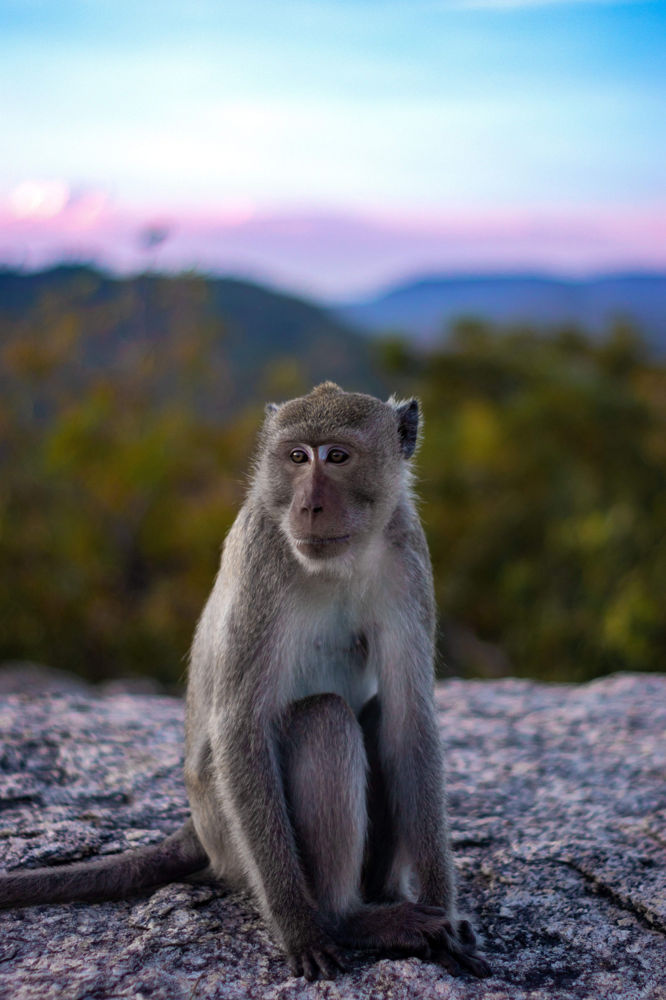
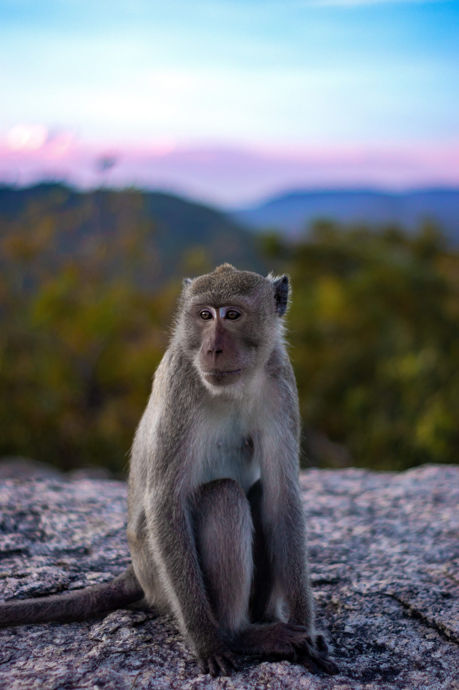
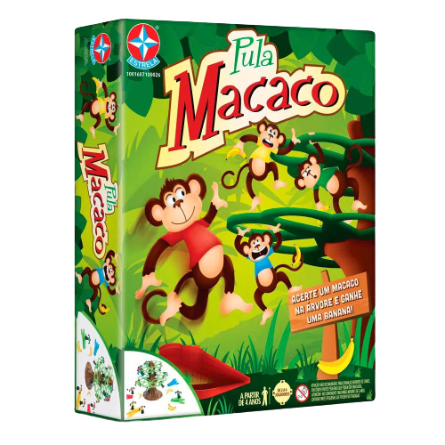
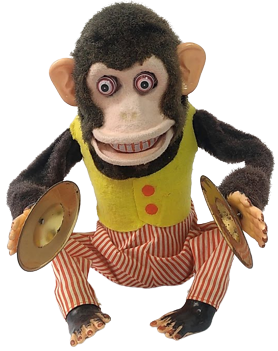
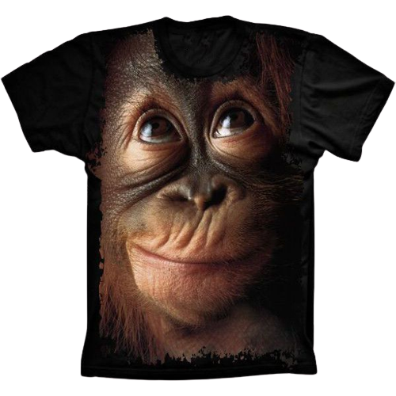
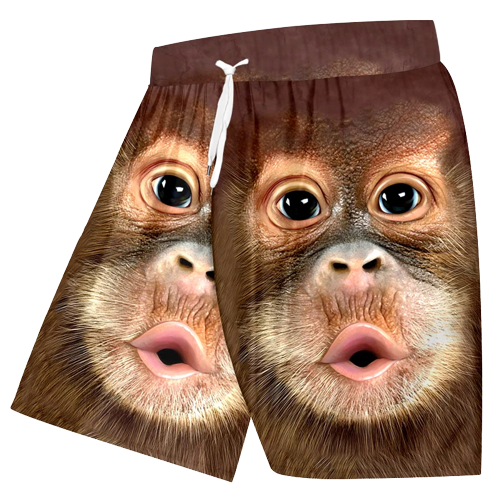
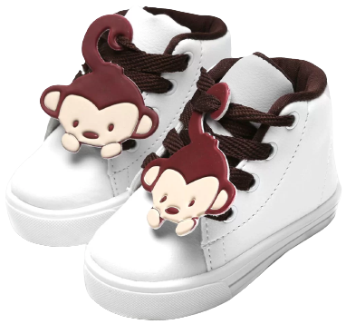

Macacos e sua Inteligência Surpreendente
Os macacos são conhecidos por sua inteligência excepcional, que rivaliza com a de muitos animais
e
até mesmo dos seres humanos. Essas criaturas incríveis possuem habilidades cognitivas
impressionantes e são capazes de aprender, resolver problemas e se adaptar a diferentes
situações.
Estudos científicos demonstraram que macacos têm a capacidade de utilizar ferramentas para obter
alimentos, mostrar empatia em relação aos membros do seu grupo e até mesmo compreender conceitos
abstratos, como números e cores. Além disso, eles exibem comportamentos complexos de
comunicação,
usando gestos e vocalizações para se expressarem.
Um exemplo notável de inteligência entre os macacos são os chimpanzés. Eles têm a habilidade de
planejar, se comunicar através da linguagem de sinais e até mesmo resolver quebra-cabeças
complexos.
Esses primatas têm demonstrado uma notável capacidade de aprendizado e memória, sendo capazes de
lembrar sequências de números e objetos.
Os macacos também exibem uma consciência social avançada. Eles são capazes de reconhecer a si
mesmos
em um espelho, uma habilidade compartilhada apenas por um pequeno número de espécies. Além
disso,
eles formam laços sociais fortes, mostrando cuidado e apoio mútuo dentro de seus grupos.
Em suma, a inteligência dos macacos é um testemunho fascinante da riqueza da vida animal. Essas
criaturas mostram uma capacidade notável de se adaptar, aprender e interagir com o mundo ao seu
redor. Ao estudar os macacos, podemos obter uma visão única da complexidade e diversidade do
reino
animal.
Bem-vindo ao Love Monkeys!
Se você é apaixonado por macacos e deseja aprender mais sobre essas criaturas adoráveis e fascinantes, você veio ao lugar certo! No Love Monkeys, oferecemos uma variedade de conteúdo relacionado a macacos para satisfazer sua curiosidade e alimentar seu amor por essas criaturas incríveis. Aqui está uma visão geral do que você encontrará em nosso site:
Artigos Informátivos
Descubra o fascinante mundo dos macacos! De suas habilidades surpreendentes a suas
intrigantes interações
sociais, nossos artigos informativos revelam os segredos dos primatas de forma envolvente e
esclarecedora.
Prepare-se para mergulhar em um mundo repleto de curiosidades sobre esses animais
adoráveis. Aprenda, surpreenda-se e alimente sua paixão pelo universo dos macacos com nossos artigos
exclusivos!
A Diversidade das Espécies de Macacos ao Redor do Mundo
Os macacos são uma das famílias de primatas mais diversificadas do reino animal. Eles são
encontrados em uma variedade de habitats ao redor do mundo, desde florestas tropicais até
savanas e montanhas. Com mais de 260 espécies conhecidas, os macacos exibem uma ampla gama de
tamanhos, cores e comportamentos.
Entre as espécies mais conhecidas estão os chimpanzés, gorilas, orangotangos e babuínos, cada um
com suas próprias características distintas. Os chimpanzés, por exemplo, são considerados nossos
parentes mais próximos, compartilhando mais de 98% de nosso DNA. Eles habitam as florestas da
África Central e são conhecidos por sua inteligência excepcional e habilidades sociais
complexas.
Já os gorilas são os maiores primatas do mundo, com os machos adultos podendo pesar até 200 kg.
Esses gigantes gentis vivem em florestas tropicais da África e são reconhecidos por seu
comportamento pacífico e laços familiares fortes.
Na Ásia, encontramos os orangotangos, que são os maiores primatas da região. Eles são nativos
das florestas tropicais da Indonésia e Malásia, e são conhecidos por sua capacidade de construir
ninhos e usar ferramentas para obter alimentos.
Os babuínos são outra espécie de macaco amplamente distribuída, encontrada principalmente na
África. Eles vivem em grupos sociais complexos e são reconhecidos por suas faces distintivas e
comportamento vocalizado.
Esses exemplos são apenas uma pequena amostra da diversidade de macacos ao redor do mundo. Cada
espécie possui adaptações únicas que lhes permitem sobreviver e prosperar em seus habitats
específicos. A exploração da variedade de macacos é uma viagem emocionante pela incrível
diversidade da vida selvagem.
Comportamento Social dos Macacos: Uma Rede de Relações Complexas
Uma das características mais notáveis dos macacos é seu comportamento social complexo. Esses
primatas são altamente sociais e vivem em grupos estruturados, onde interações, hierarquias e
laços afetivos desempenham um papel fundamental.
Os macacos estabelecem laços sociais fortes dentro de seus grupos, que geralmente são compostos
por vários indivíduos relacionados entre si. Esses grupos sociais fornecem apoio e proteção
mútuos, além de permitir a cooperação em atividades como busca de alimentos e cuidado com os
filhotes.
Dentro desses grupos, é comum observar uma hierarquia social. Os macacos frequentemente
estabelecem uma ordem de dominância, onde indivíduos mais fortes ou habilidosos ocupam posições
mais altas na hierarquia. Essa estrutura hierárquica influencia as interações sociais, como a
distribuição de recursos e o acesso a parceiros reprodutivos.
Além disso, os macacos exibem uma ampla gama de comportamentos comunicativos. Eles usam uma
combinação de vocalizações, gestos e expressões faciais para se comunicarem uns com os outros.
Essas formas de comunicação ajudam a estabelecer e manter relacionamentos, resolver conflitos e
coordenar atividades em grupo.
Os macacos também demonstram empatia e cuidado uns com os outros. Em momentos de necessidade ou
perigo, eles podem oferecer apoio e conforto, mostrando um comportamento social complexo que se
assemelha ao cuidado entre humanos.
Essa rica teia de relações sociais dos macacos é uma maravilha a ser estudada. Ela revela a
complexidade dos laços entre os indivíduos, bem como a importância do comportamento social na
sobrevivência e sucesso reprodutivo dessas fascinantes criaturas.
Galeria de Fotos
Deslumbre-se com a magia dos macacos através de nossa galeria de fotos de tirar o fôlego!
Testemunhe
momentos de pura fofura, diversão e ternura capturados em imagens impressionantes.
Cada foto revela
a
beleza e a personalidade cativante dessas criaturas incríveis. Entre em nosso mundo visual e deixe-se
encantar pelas expressões e comportamentos únicos dos macacos!
.jpg)
.jpg)
.jpg)
.jpg)
.jpg)
.jpg)
.jpg)
.jpg)
.jpg)
.jpg)
.jpg)
.jpg)
.jpg)
.jpg)
.jpg) 

Loja
Mostre seu amor pelos macacos ao mundo! Nossa loja virtual está repleta de produtos
exclusivos para todos
os entusiastas de primatas.Vista-se com estilo com nossas camisetas temáticas, desfrute de sua
bebida
favorita em nossas canecas personalizadas ou mostre seu amor pelos macacos com nossos chaveiros
encantadores.
Encontre algo especial para você ou presenteie alguém com um item exclusivo do Love
Monkeys!
Pelúcia Macaco
R$ 99,99
Jogo Pula Macaco
R$ 99,99
Boneco Macaco
R$ 99,99
Pelúcia Banana
R$ 99,99
Camisa Macaco
R$ 99,99
Short Macaco
R$ 99,99
Macacos Beer
R$ 99,99
Sapato Macaco
R$ 99,99
Macaco Molhado
R$ 99,99
Sobre o Love Monkeys: Paixão que se Transformou em Realidade!
Bem-vindo ao Love Monkeys, onde uma paixão avassaladora por macacos se transformou em um
projeto emocionante! Nosso site foi criado por um entusiasta incansável dessas criaturas adoráveis, cujo
amor por macacos transcende as fronteiras da imaginação.
O criador do Love Monkeys é um verdadeiro apaixonado por primatas. Desde a infância, ele
ficava
fascinado com a inteligência, a agilidade e a diversidade das espécies de macacos.
Cada momento compartilhado com esses animais deixava uma marca indelével em seu coração.
Movido pela vontade de compartilhar sua paixão e conhecimento com o mundo, o criador decidiu criar o
Love Monkeys.
Seu objetivo? Criar um espaço virtual onde amantes de macacos pudessem se conectar,
aprender e se maravilhar com a incrível natureza dessas criaturas.
Ao longo dos anos, ele viajou para lugares exóticos, passou horas observando macacos em seus habitats
naturais e se dedicou a aprender tudo o que pudesse sobre seu comportamento e características únicas.
Esse conhecimento aprofundado e amor genuíno por macacos são os pilares que sustentam o Love Monkeys.
Hoje, o criador do Love Monkeys se orgulha de compartilhar essa paixão com você. Por meio deste
projeto,
ele espera inspirar outros a amar e proteger esses animais extraordinários. Cada página deste site é um
reflexo do seu amor incondicional por macacos e o desejo de espalhar a conscientização sobre sua
importância na natureza.
Então, junte-se a nós nessa jornada apaixonante e explore o Love Monkeys. Deixe-se
envolver pela emoção,
descubra fatos surpreendentes e compartilhe sua própria história de amor pelos macacos. Juntos, podemos
celebrar a magia desses seres incríveis e trabalhar para preservar seu futuro.
No Love Monkeys, a paixão contagiosa por macacos espera por você. Prepare-se para embarcar em uma
aventura selvagem e apaixonada pelos primatas mais encantadores do planeta!